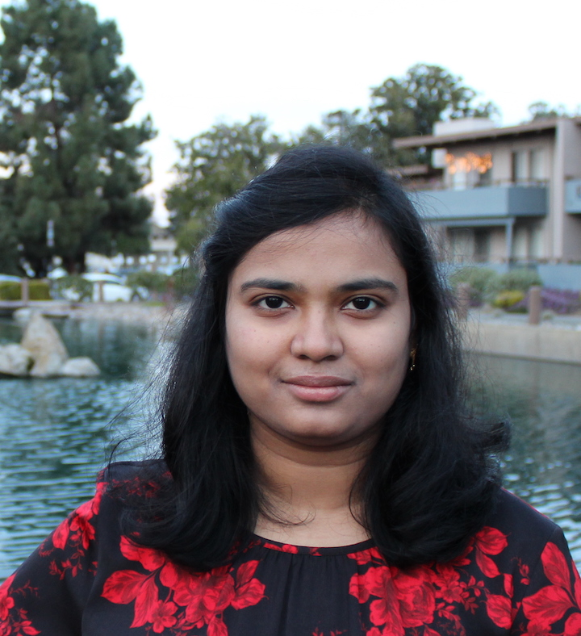

I am a final year PhD student in Computer Science at MIT advised by Prof. Armando Solar-Lezama. My research interests are in Artificial Intelligence and Program Synthesis. I develop neurosymbolic approaches for learning program models that are interpretable and generalizable, and apply them to several applications in robotics.I am on the job market this year!
CV Research Statement